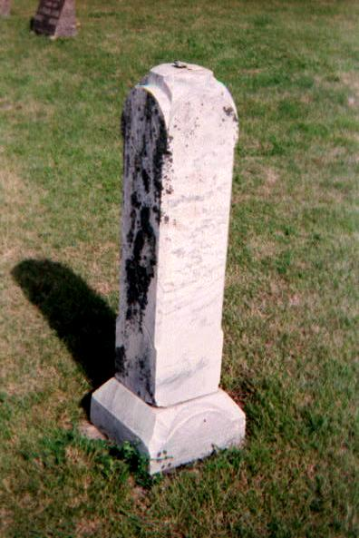
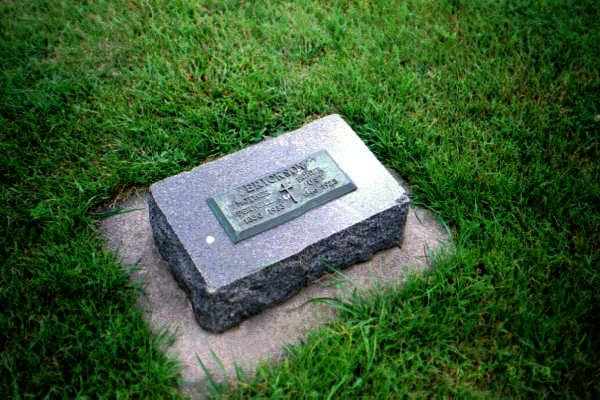

Ancestory

OTTE ERICKSON
Born: Vemundvik, Norway // August 20, 1807
Emigrated: 1866
Died: Jackson County, Minnesota // June 3, 1892
Buried: Hauges Cemetery, Jackson County, Minnesota
JULIANA OLSDATTER INGEBRIGTSON
Born: Vemundvik, Norway // February 22, 1804
Emigrated: 1866
Died: Jackson County, Minnesota January 17, 1892
Buried: Hauges Cemetery, Jackson County, Minnesota
Otte and Juliana Erickson share one gravestone with this inscription:
Huil Moder
huil Sounen rolig
Vi ses igjen i
Lysets Bolig
ERIK OTTESEN ERICKSON
Born: Vemundvik, Norway // March 16, 1831
Emigrated: 1866
Married: Rebekka Sivertsdatter Einos
Died: Windom, Minnesota // July 14, 1891
Buried: Lakeview Cemetery, Windom, Minnesota
REBEKKA SIVERTSDATTER EINOS ERICKSON
Erik Ottesen Erickson's wife
Born: Norway // April 3, 1827
Emigrated: 1866
Married: Erik Ottesen Erickson
Died: September 20, 1901
Buried: Lakeview Cemetery, Windom, Minnesota
CHRISTIAN OTTESEN ERICKSON
Born: Vemundvik, Norway // September 20, 1833
Emigrated: 1866
Married: Anna Abigael Johannesdatter Skotnas
Died: Jackson County, Minnesota // January 14, 1908
Buried: Bethany Cemetery, Jackson County, Minnesota
ANNA ABIGAEL JOHANNESDATTER SKOTNAS
Christian Ottesen Erickson's wife
Born: Kolvereid, Norway // April 25, 1834
Emigrated: 1866
Married: Christian Ottesen Erickson
Died: Jackson County, Minnesota // September 9, 1920
Buried: Bethany Cemetery, Jackson County, Minnesota
Christian and Anna Erickson share one gravestone with this inscription:
Salice ERE
DE DODE
SOM DO I
HERREN
OLUF CHRISTIANSON ERICKSON
Christian and Anna Erickson's son
Born: Vemundvik, Norway // September 8, 1865
Emigrated: 1866
Married: Berget Johnson // Jun 25, 1891 in Jackson County, Minnesota
Died: Jackson, Minnesota // March 13, 1922
Buried: Riverside Cemetery, Jackson, Minnesota
BERGET JOHNSON
Oluf Christianson Erickson's wife
Born: Tellsmarken, Norway // March 22, 1873
Emigrated: 1883 (unconfirmed)
Married: Oluf Christianson Erickson // Jun 25, 1891 in Jackson County, Minnesota
Died: Jackson, Minnesota // March 13, 1922
Buried: Riverside Cemetery, Jackson, Minnesota

JUST OTTESEN ERICKSON
Born: Vemundvik, Norway // December 21, 1846
Emigrated: 1866
Married: Pernelle Larson // August 24, 1871 in Jackson County, Minnesota
Died: Jackson County, Minnesota // May 4, 1923
Buried: Hauges Cemetery, Jackson County, Minnesota
PERNELLE LARSON
Just Ottesen Erickson's wife
Born: Norway // October 27, 1850
Emigrated: Unknown
Married: Just Ottesen Erickson // August 24, 1871 in Jackson County, Minnesota
Died: Jackson County, Minnesota // February 28, 1933
Buried: Hauges Cemetery, Jackson County, Minnesota
JOSEFA OTTESDATTER JULIEN
Born: Vemundvik, Norway // May 21, 1843
Emigrated: 1866
Married: Elias Julien // circa 1870 in Jackson County, Minnesota; they moved to North Dakota in 1882
Died: Walsh County, North Dakota // November 6, 1915
Buried: St. Peters Luthern Cemetery, Walsh County, North Dakota
ELIAS JULIEN
Josefa Ottesdatter's husband
Born: Norway // February 16, 1843
Emigrated: 1866
Married: Elias Julien // circa 1870 in Jackson County, Minnesota; they moved to North Dakota in 1882
Died: Walsh County, North Dakota // June 15, 1913
Buried: St. Peters Luthern Cemetery, Walsh County, North Dakota
ANNA OTESDATTER
Born: Vemundvik, Norway // 1827
Emigrated: 1866
No other information is currently known